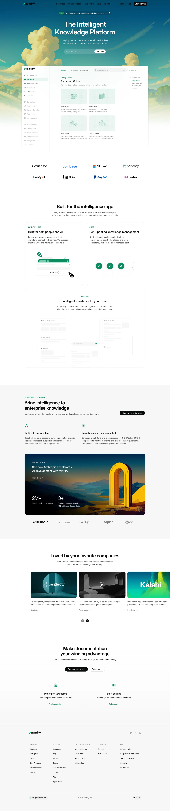

Mintlify 主题
Mintlify 的 Design.md 主题展示，围绕媒体内容、极简清爽、编辑/机构、品牌展示组织页面。
Documentation platform. Clean, green-accented, reading-optimized.
媒体内容极简清爽编辑/机构品牌展示高级质感内容出版排版系统品牌叙事

来源
- 来源
- getdesign.md
- 镜像
- github:VoltAgent/awesome-design-md
- 网站
- https://mintlify.com/
- 详情
- https://getdesign.md/mintlify/design-md
色板
#0a0a0a: #0a0a0a#00b48a: #00b48a#a8a8aa: #a8a8aa#ffffff: #ffffff#00d4a4: #00d4a4#7cebcb: #7cebcb#3772cf: #3772cf#c37d0d: #c37d0d#1ba673: #1ba673#d45656: #d45656#888888: #888888#87a8c8: #87a8c8
字体
display: Interbody: Intermono: Geist Monohints: Inter,Geist Mono,Geist
圆角
control: 8pxcard: 12pxpreview: 12pxpill: 9999pxsource: design-md
间距
xxs: 4pxxs: 8pxsm: 12pxmd: 16pxlg: 20pxxl: 24pxxxl: 32pxxxxl: 40pxsection-sm: 48pxsection: 64pxsection-lg: 96pxhero: 120pxsource: design-md
使用建议
建议
- 建议：Reserve {colors.brand-green} (Mintlify mint) for accent CTAs and active state indicators only — even one accent button per viewport carries weight。
- 建议：Use {colors.primary} (black) as the dominant CTA on light backgrounds; switch to {button-on-dark} (white pill) on dark hero bands。
- 建议：Apply {rounded.full} to every button and pill; never soften pill corners。
- 建议：Pair Inter (UI prose) with Geist Mono (code) — never introduce a third typeface。
- 建议：Use atmospheric gradient hero bands sparingly (only the homepage and startups page); keep deeper surfaces flat and dense。
避免
- 避免：use {colors.brand-green} on body text or large surfaces — it loses signal。
- 避免：introduce additional accent colors beyond mint, tag-blue, error-red, and the testimonial orange。
- 避免：apply heavy shadows on flat documentation cards; reserve elevation for the hero product mockup。
- 避免：reduce documentation line-height below 1.50 — long-form readability suffers。
- 避免：combine atmospheric gradients with multiple competing color accents in the same hero — the sky/dark gradient is the brand mood; let it breathe。
查看 DESIGN.md